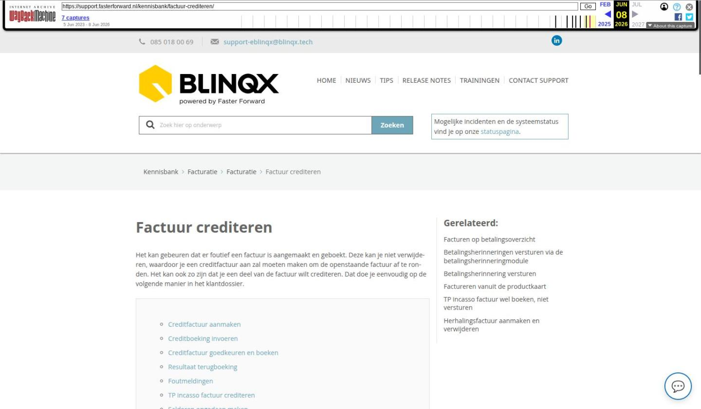

Factuur crediteren

Tekstinhoud
Factuur crediteren
Het kan gebeuren dat er foutief een factuur is aangemaakt en geboekt. Deze kan je niet verwijderen, waardoor je een creditfactuur aan zal moeten maken om de openstaande factuur af te ronden. Het kan ook zo zijn dat je een deel van de factuur wilt crediteren. Dat doe je eenvoudig op de volgende manier in het klantdossier.
Creditfactuur aanmaken
Creditboeking invoeren
Creditfactuur goedkeuren en boeken
Resultaat terugboeking
Foutmeldingen
TP incasso factuur crediteren
Salderen ongedaan maken
Creditfactuur aanmaken
Open de factuur en klik hier op ‘Creditfactuur aanmaken’.
Let op: voor een creditfactuur die afgeboekt is tegen de originele factuur kan geen creditfactuur worden aangemaakt (een creditfactuur kan niet gecrediteerd worden).
Creditboeking invoeren
Voer de datum, de reden van crediteren en het credit factuurbedrag in.
Als dit is ingevoerd, klik je op ‘Creditfactuur aanmaken’.
Creditfactuur goedkeuren en boeken
De creditfactuur wordt aangemaakt. Deze creditfactuur dien je nog wel goed te keuren en te boeken via de workflow. Het is afhankelijk van de workflowinrichting van jouw omgeving welke stappen je in de workflow dient te nemen. Dit kunnen de stappen zijn ‘Dit is een creditfactuur’ en vervolgens ‘Factuur goedkeuren en boeken’. Het kan ook direct de stap zijn ‘Factuur goedkeuren en boeken’. De creditfactuur wordt geboekt in de administratie van de oorspronkelijke factuur.
Resultaat terugboeking
Wanneer de creditfactuur is goedgekeurd en geboekt wordt het bedrag direct afgeboekt tegen de gecrediteerde factuur. De rekenmachine voor het factuurnummer geeft aan dat het bedrag is gesaldeerd.
Ga met je muis op het boek staan en klik vervolgens op het vergrootglas om de boekingen op de debiteurenkaart te zien.
Tot slot wordt de tegenboeking uiteraard ook verwerkt in de grootboekkaart. Deze zie je terug als je in het menu gaat naar ‘Debiteurenkaarten’.
Foutmeldingen
Wanneer er elementen, bijvoorbeeld het artikel of prijs, zijn aangepast dan is het niet mogelijk om via de knop een creditfactuur aan te maken. Je kunt dan handmatig een creditfactuur aanmaken. Dit via het tabblad Financieel – het plusicoon.
Vervolgens kan je de factuur middels de workflow goedkeuren en boeken. En daarna de facturen salderen (zie TP incasso factuur crediteren).
TP incasso factuur crediteren
De knop ‘Creditfactuur aanmaken’ is niet aanwezig in een factuur aangemaakt vanuit een “TP incasso boeking”. Je zult dan vanuit het product – tabblad TP incasso boekingen handmatig een boeking moeten aanmaken met de knop ‘Eenmalige boeking toevoegen’.
Deze boeking zet je om naar factuur door op ‘Aanmaken’ te klikken.
Vervolgens kan je twee facturen tegen elkaar salderen. Dit vanuit het tabblad Financieel. Je vinkt de betreffende facturen aan – klikt op de knop ‘Acties’ en vervolgens op ‘Selectie salderen’.
Salderen ongedaan maken
Het is ook mogelijk om het salderen ongedaan te maken. Hier lees je daar meer over.
Laatste update: 16 maart 2026
Was deze informatie nuttig?
Ja Nee